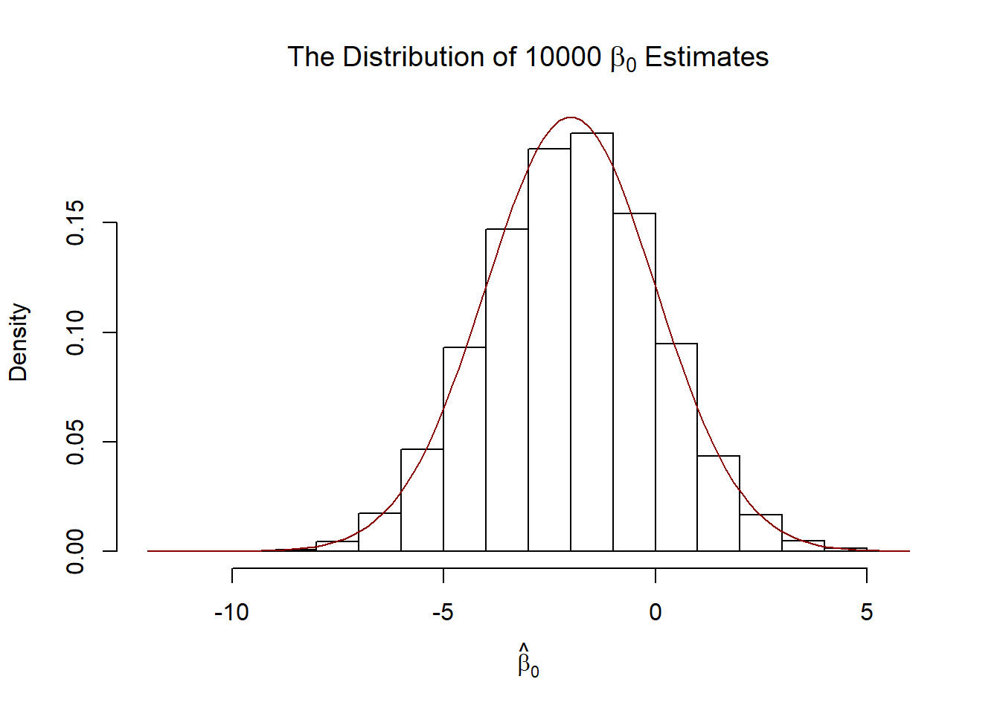

2.1 Testing Two-Sided Hypotheses Concerning the Slope Coefficient
Using the fact that \(\hat{\beta}_1\) is approximately normally distributed in large samples (see Key Concept 4.4), testing hypotheses about the true value \(\beta_1\) can be done as in Chapter ??.
Key Concept 5.1
General Form of the \(t\)-Statistic
Remember from Chapter ?? that a general \(t\)-statistic has the form \[ t = \frac{\text{estimated value} - \text{hypothesized value}}{\text{standard error of the estimator}}.\]
Key Concept 5.2
Testing Hypotheses regarding \(\beta_1\)
For testing the hypothesis \(H_0: \beta_1 = \beta_{1,0}\), we need to perform the following steps:
- Compute the standard error of \(\hat{\beta}_1\), \(SE(\hat{\beta}_1)\)
\[ SE(\hat{\beta}_1) = \sqrt{ \hat{\sigma}^2_{\hat{\beta}_1} } \ \ , \ \ \hat{\sigma}^2_{\hat{\beta}_1} = \frac{1}{n} \times \frac{\frac{1}{n-2} \sum_{i=1}^n (X_i - \overline{X})^2 \hat{u_i}^2 }{ \left[ \frac{1}{n} \sum_{i=1}^n (X_i - \overline{X})^2 \right]^2}. \]
- Compute the \(t\)-statistic
\[ t = \frac{\hat{\beta}_1 - \beta_{1,0}}{ SE(\hat{\beta}_1) }. \]
- Given a two sided alternative (\(H_1:\beta_1 \neq \beta_{1,0}\)) we reject at the \(5\%\) level if \(|t^{act}| > 1.96\) or, equivalently, if the \(p\)-value is less than \(0.05\).
Recall the definition of the \(p\)-value:
The last transformation is due to the normal approximation for large samples.
Consider again the OLS regression stored in linear_model from Chapter ?? that gave us the regression line
\[ \widehat{TestScore} \ = \underset{(9.47)}{698.9} - \underset{(0.49)}{2.28} \times STR \ , \ R^2=0.051 \ , \ SER=18.6. \]
For testing a hypothesis concerning the slope parameter (the coefficient on \(STR\)), we need \(SE(\hat{\beta}_1)\), the standard error of the respective point estimator. As is common in the literature, standard errors are presented in parentheses below the point estimates.
Key Concept 5.1 reveals that it is rather cumbersome to compute the standard error and thereby the \(t\)-statistic by hand. The question you should be asking yourself right now is: can we obtain these values with minimum effort using R? Yes, we can. Let us first use summary() to get a summary on the estimated coefficients in linear_model.
Note: Throughout the book, robust standard errors are reported. We consider it instructive keep things simple at the beginning and thus start out with simple examples that do not allow for robust inference. Standard errors that are robust to heteroskedasticity are introduced in Chapter 2.4 where we also demonstrate how they can be computed using R. A discussion of heteroskedasticity-autocorrelation robust standard errors takes place in Chapter ??.
# print the summary of the coefficients to the console## Estimate Std. Error t value Pr(>|t|)
## (Intercept) 698.932949 9.4674911 73.824516 6.569846e-242
## STR -2.279808 0.4798255 -4.751327 2.783308e-06The second column of the coefficients’ summary, reports \(SE(\hat\beta_0)\) and \(SE(\hat\beta_1)\). Also, in the third column t value, we find \(t\)-statistics \(t^{act}\) suitable for tests of the separate hypotheses \(H_0: \beta_0=0\) and \(H_0: \beta_1=0\). Furthermore, the output provides us with \(p\)-values corresponding to both tests against the two-sided alternatives \(H_1:\beta_0\neq0\) respectively \(H_1:\beta_1\neq0\) in the fourth column of the table.
Let us have a closer look at the test of
\[H_0: \beta_1=0 \ \ \ vs. \ \ \ H_1: \beta_1 \neq 0.\]
We have \[ t^{act} = \frac{-2.279808 - 0}{0.4798255} \approx - 4.75. \]
What does this tell us about the significance of the estimated coefficient? We reject the null hypothesis at the \(5\%\) level of significance since \(|t^{act}| > 1.96\). That is, the observed test statistic falls into the rejection region as \(p\text{-value} = 2.78\cdot 10^{-6} < 0.05\). We conclude that the coefficient is significantly different from zero. In other words, we reject the hypothesis that the class size has no influence on the students test scores at the \(5\%\) level.
Note that although the difference is negligible in the present case as we will see later, summary() does not perform the normal approximation but calculates \(p\)-values using the \(t\)-distribution instead. Generally, the degrees of freedom of the assumed \(t\)-distribution are determined in the following manner:
\[ \text{DF} = n - k - 1 \]
where \(n\) is the number of observations used to estimate the model and \(k\) is the number of regressors, excluding the intercept. In our case, we have \(n=420\) observations and the only regressor is \(STR\) so \(k=1\). The simplest way to determine the model degrees of freedom is
# determine residual degrees of freedom
linear_model$df.residual## [1] 418Hence, for the assumed sampling distribution of \(\hat\beta_1\) we have
\[\hat\beta_1 \sim t_{418}\] such that the \(p\)-value for a two-sided significance test can be obtained by executing the following code:
2 * pt(-4.751327, df = 418)## [1] 2.78331e-06The result is very close to the value provided by summary(). However since \(n\) is sufficiently large one could just as well use the standard normal density to compute the \(p\)-value:
2 * pnorm(-4.751327)## [1] 2.02086e-06The difference is indeed negligible. These findings tell us that, if \(H_0: \beta_1 = 0\) is true and we were to repeat the whole process of gathering observations and estimating the model, observing a \(\hat\beta_1 \geq |-2.28|\) is very unlikely!
Using R we may visualize how such a statement is made when using the normal approximation. This reflects the principles depicted in figure 5.1 in the book. Do not let the following code chunk deter you: the code is somewhat longer than the usual examples and looks unappealing but there is a lot of repetition since color shadings and annotations are added on both tails of the normal distribution. We recommend to execute the code step by step in order to see how the graph is augmented with the annotations.
# Plot the standard normal on the support [-6,6]
t <- seq(-6, 6, 0.01)
plot(x = t,
y = dnorm(t, 0, 1),
type = "l",
col = "steelblue",
lwd = 2,
yaxs = "i",
axes = F,
ylab = "",
main = expression("Calculating the p-value of a Two-sided Test when" ~ t^act ~ "=-0.47"),
cex.lab = 0.7,
cex.main = 1)
tact <- -4.75
axis(1, at = c(0, -1.96, 1.96, -tact, tact), cex.axis = 0.7)
# Shade the critical regions using polygon():
# critical region in left tail
polygon(x = c(-6, seq(-6, -1.96, 0.01), -1.96),
y = c(0, dnorm(seq(-6, -1.96, 0.01)), 0),
col = 'orange')
# critical region in right tail
polygon(x = c(1.96, seq(1.96, 6, 0.01), 6),
y = c(0, dnorm(seq(1.96, 6, 0.01)), 0),
col = 'orange')
# Add arrows and texts indicating critical regions and the p-value
arrows(-3.5, 0.2, -2.5, 0.02, length = 0.1)
arrows(3.5, 0.2, 2.5, 0.02, length = 0.1)
arrows(-5, 0.16, -4.75, 0, length = 0.1)
arrows(5, 0.16, 4.75, 0, length = 0.1)
text(-3.5, 0.22,
labels = expression("0.025"~"="~over(alpha, 2)),
cex = 0.7)
text(3.5, 0.22,
labels = expression("0.025"~"="~over(alpha, 2)),
cex = 0.7)
text(-5, 0.18,
labels = expression(paste("-|",t[act],"|")),
cex = 0.7)
text(5, 0.18,
labels = expression(paste("|",t[act],"|")),
cex = 0.7)
# Add ticks indicating critical values at the 0.05-level, t^act and -t^act
rug(c(-1.96, 1.96), ticksize = 0.145, lwd = 2, col = "darkred")
rug(c(-tact, tact), ticksize = -0.0451, lwd = 2, col = "darkgreen")
The \(p\)-Value is the area under the curve to left of \(-4.75\) plus the area under the curve to the right of \(4.75\). As we already know from the calculations above, this value is very small.